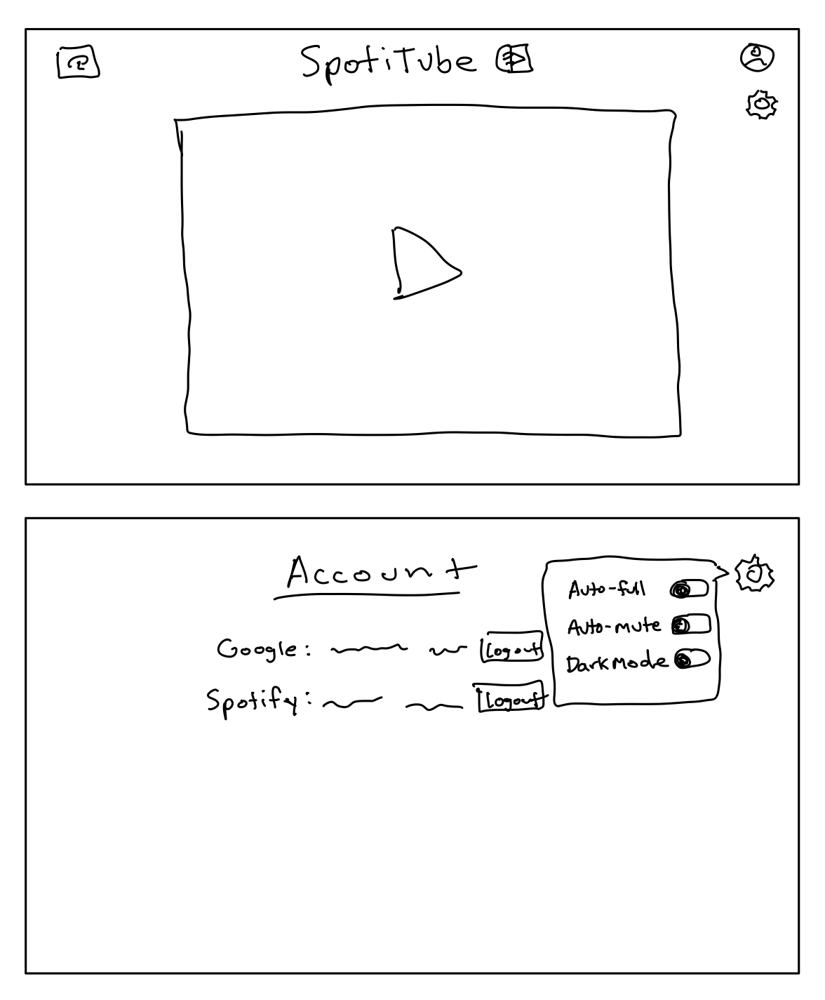

For my final project, I will be creating a web application that plays the music video,
from YouTube, for the song that the user is currently listening to on Spotify.

The first version of my project will include the basic functionality of displaying
the music video for the song that is being played. This version will include Firebase
login authentication, and a way to link the account to the user's Spotify account.
This will be fully functional, but will lack stylistic elements or options that
will be added in the final version.
The final version of the project will build on the previous, but implement more features.
This includes CSS styling, logo, a menu bar, and an options popup that provides a couple
of simple options for the Firebase/Google account.
1. Revisit previous version of this idea from HCDE 310. This was created in Python over a year
ago, so I do not exactly remember how the interactions with Spotify and YouTube APIs took place.
2. Convert old .py file into Javascript. This will not take too long, I anticipate
3. Fix current issue with YouTube API quota limit. This may require more backend work on getting
a developer API account from Google.
4. Reformat previous HTML documents to better suit current knowledge of HTML.
COMPLETED VERSION 1
5. Begin adding CSS styling. Fonts, artistic elements, name of the application, logo, etc.
6. Add options page with account information and a logout button.
7. Add options for dark mode, auto-fullscreen, auto-mute.
COMPLETED VERSION 2
I am fairly unfamiliar with API syntax for Javascript, so I will need to relearn how my old
project works and figure out if/how to create this in Javascript. Also, I am not sure
what I want the web application to look like stylistically, so I will need to spend time
designing the site so that it looks polished. Additionally, I am unfamiliar with Firebase
and how to implement it. This will likely take some time to figure out.
1. Increase accuracy when seeking in a song on Spotify. Previously, this worked, but could
be off by a second or two do to run-time of the script.
2. Reverse controls? Show the user previously watched music videos, which they can select
and then the song starts playing on Spotify too?